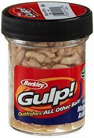

Lure Varieties
 |
 | ||
Creek fish can be caught on a wide variety of lures and baits. These can include crankbaits, worms/maggots, spinners, soft plastics, and various types of jigs. These lures imitate everthing from minnows to crayfish to aquatic larvae to insects.
The Beauty of it All
In the end, creek fishing is as simple and as complicated as it gets. While at it's core it's just about fooling some fish, the techniques and tactics never stop. A good fisherman is an educated one.